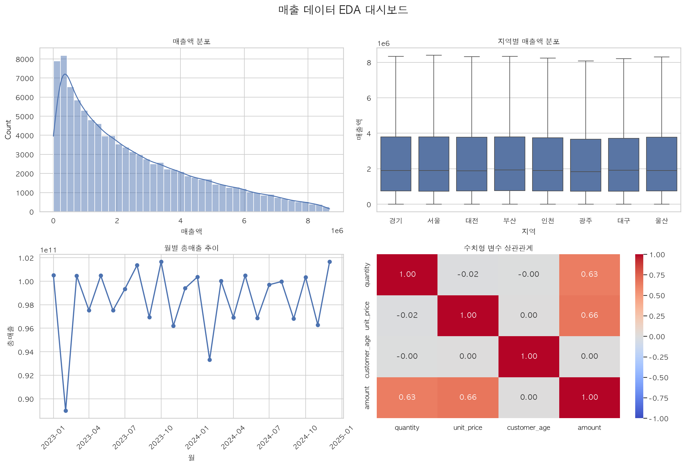

실습4 결과보고서
1. 과제 개요
이번 실습은 실습 3에서 수행한 데이터 정제 결과를 다음 분석 단계로 확장하는 과정입니다. 정제 데이터의 분포를 시각적으로 확인하고, 통계적으로 의미 있는 차이와 관계를 검정한 뒤, 판매 금액을 예측하는 회귀 Pipeline을 구성했습니다. 마지막으로 분석 결과를 재사용할 수 있도록 이미지, HTML, 모델 파일로 저장했습니다.
| 구분 | 구현 내용 | 산출물·결과 |
|---|---|---|
| EDA | 매출 분포·지역별 분포·월별 추이·상관관계 시각화 | eda_dashboard.png |
| 통계 검정 | 서울·부산 t-test, 지역·카테고리 카이제곱 검정 | p-value와 해석 출력 |
| 머신러닝 | 전처리와 Ridge 회귀를 Pipeline으로 구성 | R² 0.8426, RMSE 834,232.99 |
| 결과 저장 | EDA 이미지·Plotly HTML·학습 모델 저장 | outputs 폴더 3개 파일 |
1.1 전체 처리 흐름
2. 실행 환경 및 구조
| 항목 | 내용 |
|---|---|
| 실행 파일 | 판교_1반_장현진.py |
| 연계 모듈 | practice3_analysis.py |
| 입력 데이터 | sales_100k.csv, 실제 실행 기준 1,000,000행 × 11열 |
| 가상환경 | .venv, Python 3.14 계열 |
2. 실행 환경 및 구조
2.1 디렉터리 구조
Day2/ ├── 판교_1반_장현진.py ├── practice3_analysis.py ├── sales_100k.csv ├── requirements.txt ├── outputs/ │ ├── eda_dashboard.png │ ├── regional_category_sales.html │ └── sales_ridge_pipeline.joblib └── .venv/
2.2 필수 라이브러리 버전 및 역할
| 라이브러리 | requirements.txt 버전 | 사용 목적 |
|---|---|---|
| pandas | >=2.2, <3.0 | 데이터프레임 처리·집계 |
| polars | >=1.0, <2.0 | 실습 3 Polars 집계 연계 |
| duckdb | >=1.0, <2.0 | 실습 3 SQL 집계 연계 |
| matplotlib / seaborn | matplotlib >=3.8,<4.0 seaborn >=0.13,<1.0 | EDA 그래프와 대시보드 |
| scipy | >=1.11, <2.0 | t-test·카이제곱 검정 |
| scikit-learn | >=1.4, <2.0 | 전처리·Ridge·Pipeline·평가 |
| joblib | >=1.3, <2.0 | 모델 저장·재로딩 |
| plotly | >=5.20, <7.0 | 인터랙티브 HTML 차트 |
2.3 실행 전 준비
프로젝트 폴더에 입력 CSV와 실습 3 모듈을 배치하고, 가상환경에서 requirements.txt의 라이브러리를 설치합니다. 실행 결과는 프로젝트 내부 outputs 폴더에 저장되도록 구성했습니다.
python -m pip install -r requirements.txt python 판교_1반_장현진.py
2.4 교재 요구사항 대응
| 교재 요구사항 | 현재 구현 | 확인 근거 |
|---|---|---|
| 2×2 서브플롯으로 시각화 4종 구성 | 히스토그램+KDE, 박스플롯, 월별 라인, 상관 히트맵 | plt.subplots(2, 2), eda_dashboard.png |
| t-test 통계량·p-value와 해석 출력 | 서울·부산 평균 매출 Welch t-test | t=0.6524, p=0.514147, 차이 없음 해석 |
| 카이제곱 p-value와 해석 출력 | 지역·카테고리 교차표 독립성 검정 | χ²=74.9919, p=0.009854, 독립 아님 해석 |
| 전처리와 모델을 Pipeline 객체로 구성 | ColumnTransformer와 Ridge를 하나의 Pipeline으로 연결 | fit(), predict(), score() 실행 |
| 모델 파일 저장 | Pipeline 전체를 joblib 형식으로 저장·재로딩 | sales_ridge_pipeline.joblib, 예측 일치 True |
| Plotly 인터랙티브 차트 HTML 저장 | 지역·카테고리별 총매출 막대 차트 | write_html(), regional_category_sales.html |
2.5 EDA 차트별 확인 목적
| 차트 | 확인 목적 | 코드 요소 |
|---|---|---|
| 히스토그램+KDE | 매출액의 분포 형태와 치우침 확인 | sns.histplot() |
| 박스플롯 | 지역별 중앙값·분산·분포 차이 비교 | sns.boxplot() |
| 월별 라인 | 시간 흐름에 따른 총매출 변화 확인 | groupby("month") |
| 상관 히트맵 | 수치형 변수 간 선형 관계의 방향과 강도 확인 | corr(), sns.heatmap() |
2.6 가설 설정과 판단 기준
| 검정 | 귀무가설(H0) | 대립가설(H1) | 판단 |
|---|---|---|---|
| t-test | 서울과 부산의 평균 매출이 같다 | 두 지역의 평균 매출이 다르다 | p=0.514147 > 0.05이므로 H0를 기각하지 못함 |
| 카이제곱 | 지역과 카테고리는 독립이다 | 지역과 카테고리는 관련이 있다 | p=0.009854 < 0.05이므로 H0 기각 |
3. 실행 결과
3.1 파이프라인 실행
3.2 실행 결과 전문
[1] 데이터 기본 정보 크기: (1,000,000, 11) IQR 적용 후 행 수: 973,806 집계 키 결측 제거 후 행 수: 956,349 총 제외 행 수: 43,651 [2] 통계 검정 t-test: t=0.6524, p=0.514147 카이제곱 검정: chi2=74.9919, 자유도=49, p=0.009854 [3] sklearn Pipeline 학습 행 수: 160,000, 평가 행 수: 40,000 R²: 0.8426, RMSE: 834,232.99 모델 저장: sales_ridge_pipeline.joblib 재로딩 예측 일치: True [4] Plotly 차트 저장: regional_category_sales.html 실습 4 완료: outputs 폴더를 확인합니다.
3. 실행 결과
3.3 EDA 대시보드
정제 데이터에서 매출액 분포, 지역별 매출액 분포, 월별 총매출 추이, 수치형 변수 상관관계를 하나의 2×2 대시보드로 구성했습니다. 시각화용 데이터는 최대 100,000행을 고정 시드로 샘플링하여 같은 조건에서 다시 실행할 수 있도록 했습니다.

3.4 저장 산출물
Matplotlib·Seaborn 대시보드
Plotly 인터랙티브 차트
학습 완료 Pipeline 모델
통계 검정·평가 지표 출력
4. 코드 구성 및 분석
4.1 주요 함수와 변수
| 구분 | 이름 | 역할 |
|---|---|---|
| 함수 | prepare_output_directory() | outputs 폴더 생성 |
| 함수 | configure_plot_style() | 그래프 테마와 macOS 한글 폰트 설정 |
| 함수 | create_eda_dashboard(clean_frame) | 2×2 EDA 그래프 생성 및 PNG 저장 |
| 함수 | run_statistical_tests(clean_frame) | t-test와 카이제곱 검정 실행 |
| 함수 | train_and_save_pipeline(clean_frame) | 전처리·Ridge 학습, 평가, 저장, 재로딩 |
| 함수 | create_plotly_chart(summary) | 지역·카테고리별 HTML 차트 저장 |
| 변수 | clean_frame | 실습 3에서 전달된 정제 데이터 |
| 변수 | summary | 지역·카테고리별 Pandas 집계 결과 |
| 변수 | numeric_features / categorical_features | 모델 입력 수치형·범주형 특성 목록 |
| 변수 | RANDOM_STATE / SIGNIFICANCE_LEVEL | 재현성 기준값 / 통계 유의수준 |
4.2 통계 검정 설계
서울과 부산의 매출 평균 차이는 등분산을 가정하지 않는 Welch t-test로 확인하고, 지역과 카테고리의 관련성은 교차표를 만든 뒤 카이제곱 독립성 검정으로 확인했습니다. 두 검정 모두 유의수준 0.05를 기준으로 p-value를 해석했습니다.
| 검정 | 결과 | 해석 |
|---|---|---|
| 서울·부산 t-test | t=0.6524, p=0.514147 | 평균 매출 차이가 유의하지 않음 |
| 지역·카테고리 카이제곱 | χ²=74.9919, 자유도=49, p=0.009854 | 두 변수가 독립적이지 않음 |
4. 코드 구성 및 분석
4.3 머신러닝 Pipeline
학습 특성은 quantity, unit_price, customer_age와 region, category, payment_method, customer_gender로 구성했습니다. 수치형 변수에는 중앙값 대치와 표준화를 적용하고, 범주형 변수에는 최빈값 대치와 원-핫 인코딩을 적용했습니다. 이후 Ridge 회귀 모델을 연결하여 학습·평가·저장·재로딩까지 수행했습니다.
numeric_pipeline = Pipeline([
("imputer", SimpleImputer(strategy="median")),
("scaler", StandardScaler()),
])
model_pipeline = Pipeline([
("preprocessor", preprocessor),
("model", Ridge(alpha=1.0)),
])
| 단계 | 사용 객체·메서드 | 역할 |
|---|---|---|
| 전처리 | ColumnTransformer | 수치형·범주형 컬럼을 분리해 서로 다른 처리 적용 |
| 학습 | fit() | 전처리 기준과 Ridge 회귀 계수를 학습 |
| 예측 | predict() | 평가 데이터의 매출액 예측값 생성 |
| 평가 | score(), RMSE | 설명력과 예측 오차 확인 |
| 저장·복원 | joblib.dump(), joblib.load() | 전처리와 모델을 함께 재사용 |
4. 코드 구성 및 분석
4.4 정제 및 모델 결과 해석
원본 1,000,000행 중 IQR 정상 범위에 포함되지 않는 행을 먼저 제외하고, 지역과 카테고리 결측 행을 추가로 제거했습니다. 최종 정제 데이터는 집계와 후속 모델 학습의 입력으로 사용되었습니다.
| 항목 | 실행 결과 |
|---|---|
| 원본 크기 | 1,000,000행 × 11열 |
| IQR 적용 후 | 973,806행 |
| 최종 정제 후 | 956,349행 |
| Pandas 집계 상위 | 서울·의류, 총매출 약 74,992,750,000 |
결측치를 제거한 데이터에서 최대 200,000행을 사용하고, 이를 8:2 비율로 나누어 학습 행 160,000개와 평가 행 40,000개를 구성했습니다. R² 0.8426은 평가 데이터의 변동을 비교적 잘 설명한 결과이며, RMSE는 예측값과 실제 매출액 차이의 대표적인 크기를 나타냅니다. 모델 저장 후 재로딩한 예측이 일치하여 저장·복원 흐름도 정상 동작했습니다.
5. 검증 결과
| 검증 항목 | 결과 |
|---|---|
| Python 문법 검사 | python3 -m py_compile 판교_1반_장현진.py 통과 |
| 전체 실행 | EDA 이미지, 모델 파일, Plotly HTML 생성 완료 |
| 모델 재로딩 | 재로딩 예측 일치: True |
6. 개선 사항
| 현재 한계 | 영향 | 개선 방향 |
|---|---|---|
| Pandas 집계 함수가 두 번 호출됨 | 동일한 집계 결과가 터미널에 중복 출력되고 불필요한 연산이 발생함 | 첫 번째 호출에서 반환받은 summary를 재사용하고 두 번째 호출을 제거 |
| Ridge 모델 하나만 비교 | 모델별 성능 차이를 확인하기 어려움 | 선형·트리 계열 모델을 추가하고 동일한 지표로 비교 |
| 통계 검정의 전제 조건을 별도 점검하지 않음 | 검정 결과 해석에 제한이 있음 | 분포·표본 크기·기대도수 등을 함께 확인 |
| 기술통계 표를 별도로 출력하지 않음 | 평균·표준편차·분위수 등 기본 분포 수치를 보고서에서 직접 비교하기 어려움 | describe() 결과와 왜도·첨도를 표로 추가 |
7. 최종 정리
이번 실습에서는 하나의 정제 데이터 흐름을 시각화, 통계, 머신러닝 분석으로 확장하고 각각의 결과물을 파일로 저장했습니다. 특히 Pipeline 재로딩 검증을 통해 모델 산출물의 재사용 가능성도 확인했습니다.
- EDA 결과를 정적 이미지로 저장해 데이터 특성을 한 화면에서 확인했습니다.
- 통계 검정 결과를 p-value 기준으로 해석해 평균 차이와 변수 관계를 구분했습니다.
- 전처리와 모델을 Pipeline으로 묶어 학습과 재사용 흐름을 일관되게 구성했습니다.
- 이미지·HTML·모델 파일을 outputs 폴더에 분리해 산출물의 목적을 명확히 했습니다.